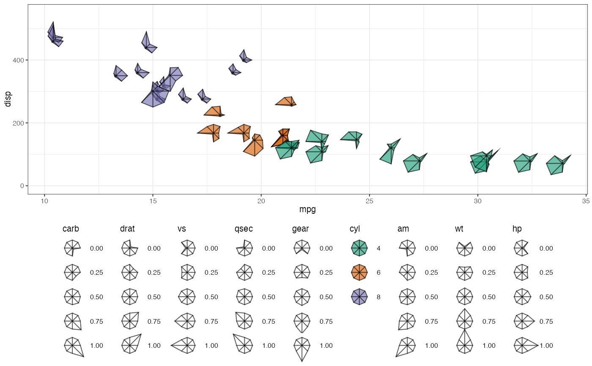
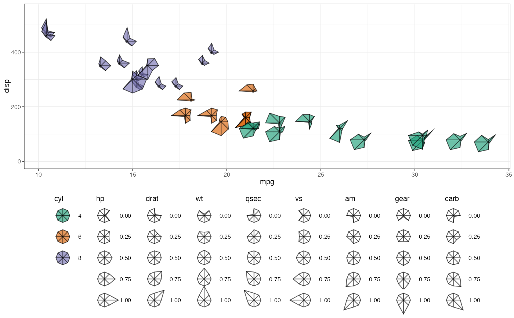

Helper function to preserve the display order of legends associated with
multiple col aesthetics.
Details
This function is primarily intended for use with ggmultiglyph scales
such as scale_z_continuous(). Internally, ggplot2 may not
preserve the order of aesthetics supplied to a scale when guides are
assembled during plot construction (via the internal guide setup machinery
i.e. ggplot2:::Guides$setup() in ggplot2 v 4.0.0). As a result,
legends corresponding to z aesthetics can appear in an order that
differs from the order specified by the user.
guide_z_order() constructs a guides() specification that
explicitly assigns guide orders, ensuring that the default ggplot2 aesthetic
legend (FOr example, "fill") is displayed first, followed by the
supplied z aesthetics in the order given.
Examples
zs <- c("hp", "drat", "wt", "qsec", "vs", "am", "gear", "carb")
mtcars[ , zs] <- lapply(mtcars[ , zs], scales::rescale)
mtcars$cyl <- as.factor(mtcars$cyl)
mtcars$lab <- row.names(mtcars)
library(ggplot2)
theme_set(theme_bw())
options(ggplot2.discrete.colour = RColorBrewer::brewer.pal(8, "Dark2"))
options(ggplot2.discrete.fill = RColorBrewer::brewer.pal(8, "Dark2"))
# Theme for proper display of all the guides
guide_theme <-
theme(legend.direction = "vertical",
legend.box = "horizontal",
legend.position = "bottom",
legend.text = element_text(margin = margin(l = 7)),
legend.key.height = unit(1.5, 'lines'))
# Order of guides is scrambled
ggplot(data = mtcars) +
geom_starglyph(aes(x = mpg, y = disp, fill = cyl),
cols = zs, whisker = TRUE, contour = TRUE,
size = 5, alpha = 0.8) +
ylim(c(-0, 550)) +
scale_z_continuous(z = zs) +
theme_bw(base_size = 7.5) +
guide_theme

# Fixing the order of guides by individual assignment
ggplot(data = mtcars) +
geom_starglyph(aes(x = mpg, y = disp, fill = cyl),
cols = zs, whisker = TRUE, contour = TRUE,
size = 5, alpha = 0.8) +
ylim(c(-0, 550)) +
scale_z_continuous(z = zs) +
theme_bw(base_size = 7.5) +
guides(fill = guide_legend(order = 1),
hp = guide_legend(order = 2),
drat = guide_legend(order = 3),
wt = guide_legend(order = 4),
qsec = guide_legend(order = 5),
vs = guide_legend(order = 6),
am = guide_legend(order = 7),
gear = guide_legend(order = 8),
carb = guide_legend(order = 9)) +
guide_theme
 # Work-around using guide_z_order
ggplot(data = mtcars) +
geom_starglyph(aes(x = mpg, y = disp, fill = cyl),
cols = zs, whisker = TRUE, contour = TRUE,
size = 5, alpha = 0.8) +
ylim(c(-0, 550)) +
scale_z_continuous(z = zs) +
guide_z_order(z = zs, default_aes = "fill") +
theme_bw(base_size = 7.5) +
guide_theme
# Work-around using guide_z_order
ggplot(data = mtcars) +
geom_starglyph(aes(x = mpg, y = disp, fill = cyl),
cols = zs, whisker = TRUE, contour = TRUE,
size = 5, alpha = 0.8) +
ylim(c(-0, 550)) +
scale_z_continuous(z = zs) +
guide_z_order(z = zs, default_aes = "fill") +
theme_bw(base_size = 7.5) +
guide_theme
